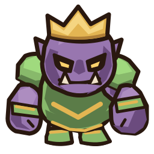
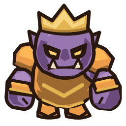
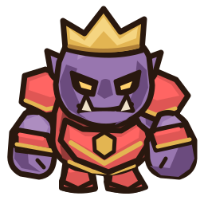
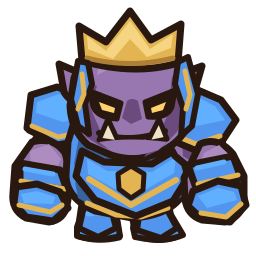
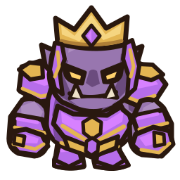
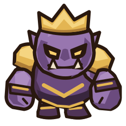

Корона, цветные наплечники, лёгкие наручи и ботинки.
Уровни для волн 5 → 10 → 15 → 20 → 25. Фиолетовая кожа сохраняется; цвет уровня — на броне. Оба кулака свободны для двухручной атаки.






Проверьте лицо, читаемость цветов и нарастание брони. На телефоне таблицу можно прокрутить вбок. Это только статическое превью; игра и анимации пока не изменены.